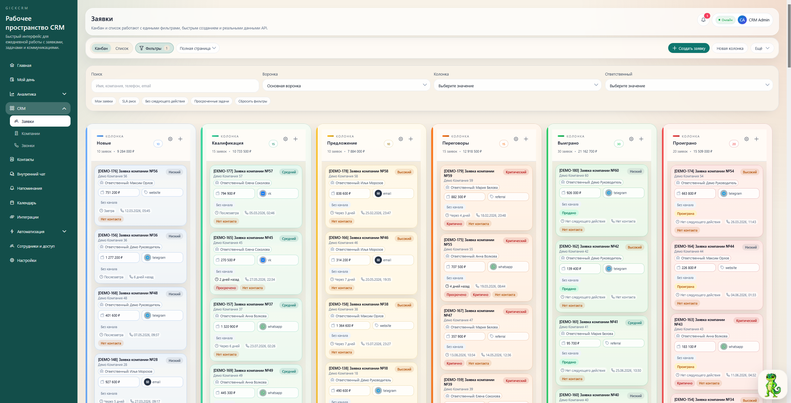
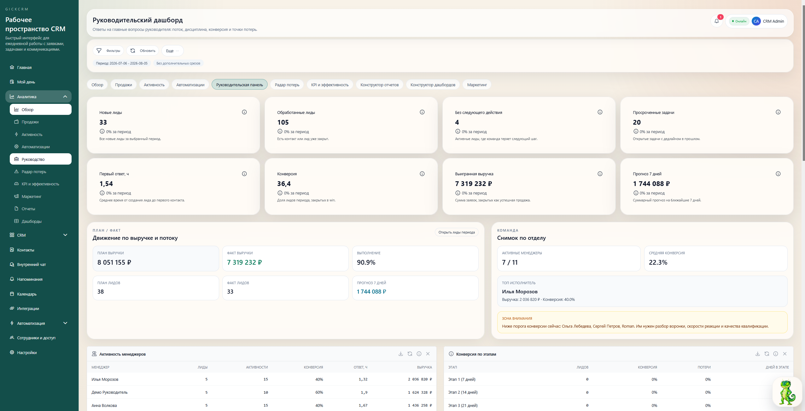
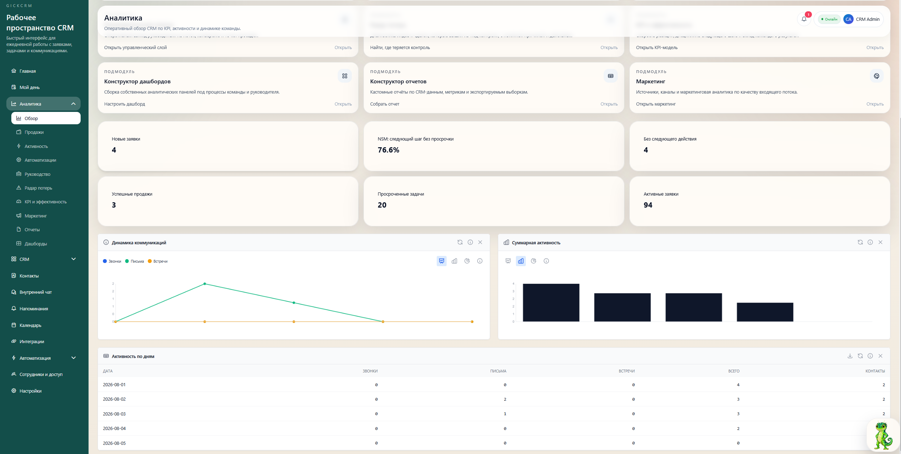
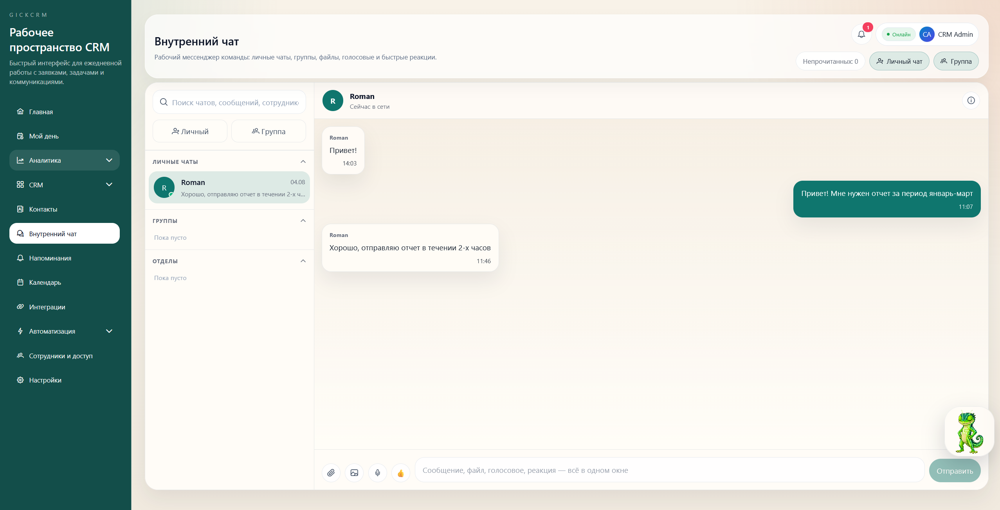
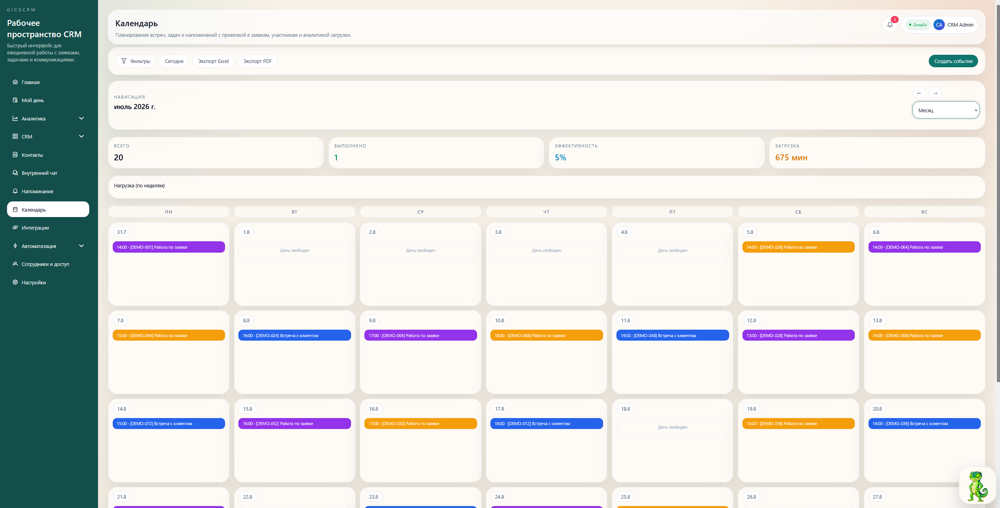
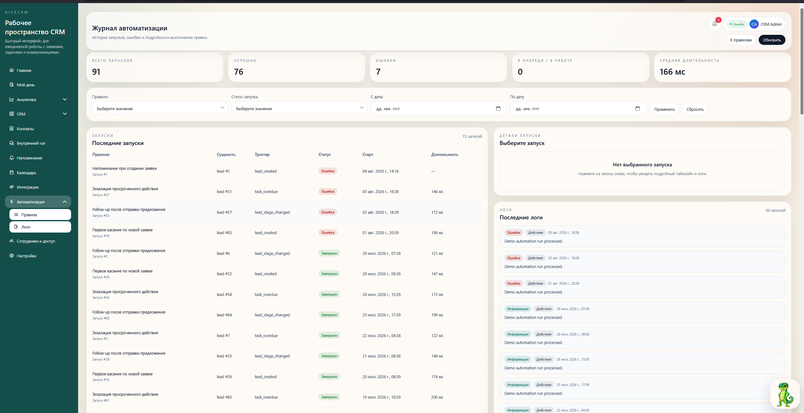
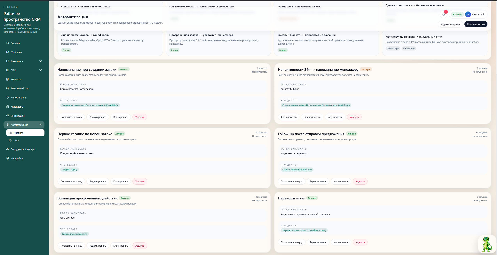
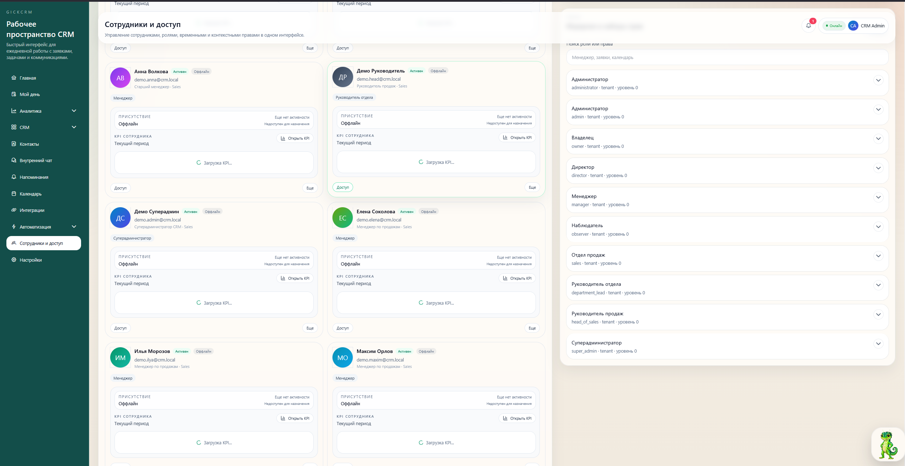
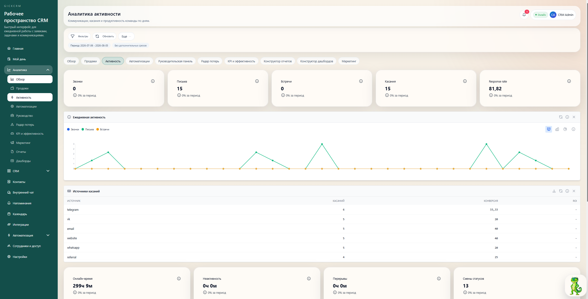

CRM для продаж, заявок, коммуникаций и управленческого контроля
Премиальное рабочее пространство
для команды, которая не хочет терять клиентов.
GickCRM собирает канбан, карточку клиента, задачи, переписки, автоматизации и руководительскую аналитику в одной системе. Менеджер понимает, что делать дальше. Руководитель сразу видит, где теряются заявки, сроки и деньги.
АКМРДС+12
Команда начинает работать в первый день
Без тяжёлого внедрения, перегруженных экранов и лишнего шума.
⚡
АвтоматизацияСоздать задачу, если у лида нет следующего шага

Помощник GickCRMГик подсказывает, куда смотреть в первую очередь
CRM / Канбан / Основная воронка

Руководитель

Листайте, чтобы увидеть продукт ↓
Единое пространство для отделов продаж, сервиса, маркетинга и клиентских команд
Продуктовый core
CRM, которая ускоряет обработку заявки
CRM, которая ускоряет обработку заявки
и делает продажи прозрачными.
Главный фокус — канбан, карточка клиента, история коммуникаций, следующее действие, автоматизации и аналитика руководителя. Без раннего перегруза и лишней enterprise-сложности.
▣
Рабочий экран, в котором всё под рукой
Заявки, ежедневный контур, показатели, просрочки и зоны внимания собраны в одном понятном интерфейсе.

Карточка клиента и история касаний
Контакты, этап, переписка, задачи, следующее действие и история изменений — в одном месте.
- История сообщений и звонков
- Задачи и напоминания
- Следующий шаг без просрочки
Автоматизации, которые действительно снимают рутину
Триггеры и действия помогают не забывать о клиентах, назначать ответственных и поддерживать дисциплину процесса.
Новая заявкаНазначить менеджераСоздать задачу
Интеграции и единое окно коммуникаций
Telegram, WhatsApp, email, телефония и другие каналы работают как единая история клиента.
TelegramWhatsAppEmailТелефонияVK
Один прозрачный процесс
От заявки до управляемого результата
GickCRM делает ежедневную работу менеджера понятной, а работу руководителя — прозрачной и управляемой.
Заявка попадает в CRM
Из сайта, мессенджеров, рекламы, email или звонка — сразу в воронку.
Менеджер видит, что делать дальше
Источник, приоритет, история, владелец и следующее действие показываются сразу.
Система контролирует движение
Просрочки, задачи и автоматизации не дают заявкам остыть и зависать без касания.
Руководитель видит слабые места
Потери, KPI, эффективность сотрудников и маркетинговых каналов становятся прозрачными.
Абстрактный слой управления
Контроль ощущается не как тяжёлый ERP-контур, а как чистая и быстрая система.
Мы добавили отдельный визуальный слой, который усиливает технологичность бренда без перегруза интерфейсом. Это абстрактная анимация, не привязанная к скриншотам — чтобы сайт ощущался премиальным, а не просто каталогом экранов.
Внутри GickCRM
Ключевые экраны собраны в живую продуктовую витрину.
Главная панель, канбан, чат, календарь, автоматизации, сотрудники, журнал активности и помощник — всё это показано как единая экосистема, а не просто список картинок.





Управленческая аналитика
Руководитель видит не красивый отчёт, а реальную операционную картину.
Сколько заявок в работе, где просрочки, у кого нет следующего действия, где падает конверсия и какие каналы дают качественный входящий поток — всё это собирается в одном управленческом слое.
- ✓Продажи и воронка по этапам
- ✓Активность команды и дисциплина касаний
- ✓KPI, маркетинг и руководительские срезы
Главный обзор
OnlineОперативная аналитика CRM

Активные заявки3
Без следующего действия3
Просроченные задачи2
Понятный старт
Тарифы, с которых можно расти без лишней сложности
Сильный core-продукт сначала. Расширение — только там, где оно реально повышает ценность для команды и руководителя.
Lite
Для небольшой команды, которой нужен базовый контур продаж, задач и коммуникаций.
от 3 500 ₽/ месяц
- Канбан и карточка заявки
- Задачи и следующее действие
- Базовая аналитика
- Интеграции и коммуникации
Team
Для активных отделов продаж и клиентских команд, которым нужен контроль процесса и автоматизация рутины.
По запросуПодбирается под команду
- Всё из Lite
- Автоматизации и правила
- KPI и расширенная аналитика
- Контроль руководителя
- Маркетинговые каналы и источники
Business
Для команд, где важны несколько воронок, сложные сценарии, права доступа и масштабирование.
ИндивидуальноПосле демонстрации
- Мультироли и доступы
- Несколько воронок и процессов
- Приоритетные интеграции
- Гибкие настройки и масштабирование
Демо GickCRM
Покажем, как GickCRM может работать именно в вашем процессе.
Разберём, откуда приходят заявки, как менеджеры ведут клиентов, где теряются касания и как быстро собрать сильный CRM-контур без перегруза интерфейса.
Гик остаётся рядомНе ради декора, а как дружелюбный фирменный помощник бренда.